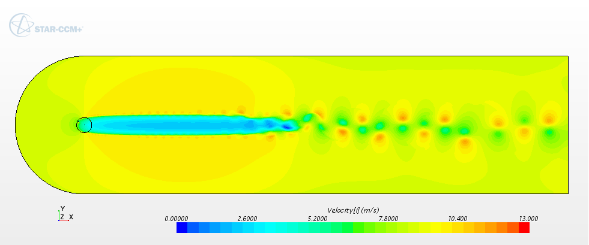

Eric Tingey

(208) 949-4373
Research
I am a graduate student at Brigham Young University working towards receiving my M.S. degree in mechanical engineering. I am from Meridian, Idaho and I enjoy playing the piano, skiing, and learning about languages and cultures. I enjoy engineering and I have always been fascinated with aviation and aerospace.
I am researching vertical-axis wind turbines (VAWTs) with a focus on how their wakes propagate downstream. VAWTs are of interest, especially in offshore locations, and knowing how their wakes propagate is important in positioning each of the turbines in a wind farm in a way that maximizes power output. To do this, I use a computational fluid dynamics (CFD) program called STAR-CCM+ to model the complex fluid flow and obtain data such as the velocity profile and wake expansion. Currently, I am working on creating a reduced-order analytic model to describe the wake behavior in a way the can be used in optimization of wind farm layout in a quick and efficient manner. Below is a picture of what a VAWT wake looks like.

Education
- M.S., Brigham Young University, Mechanical Engineering, Dec 2016
- B.S., Brigham Young University, Mechanical Engineering, Dec 2014
Professional Experience
- Brigham Young University, Research Assistant, August 2014–present
- MountainStar Healthcare- HCA, Process Improvement Intern, June 2014–August 2014
- Brigham Young University, Research Assistant, September 2013–April 2014
- Missionary Training Center, Spanish Zone Coordinator, September 2011–August 2013
Honors and Awards
- BYU Graduate Research Fellowship, 2015-2016
- BYU University Scholarship, 2011-2014